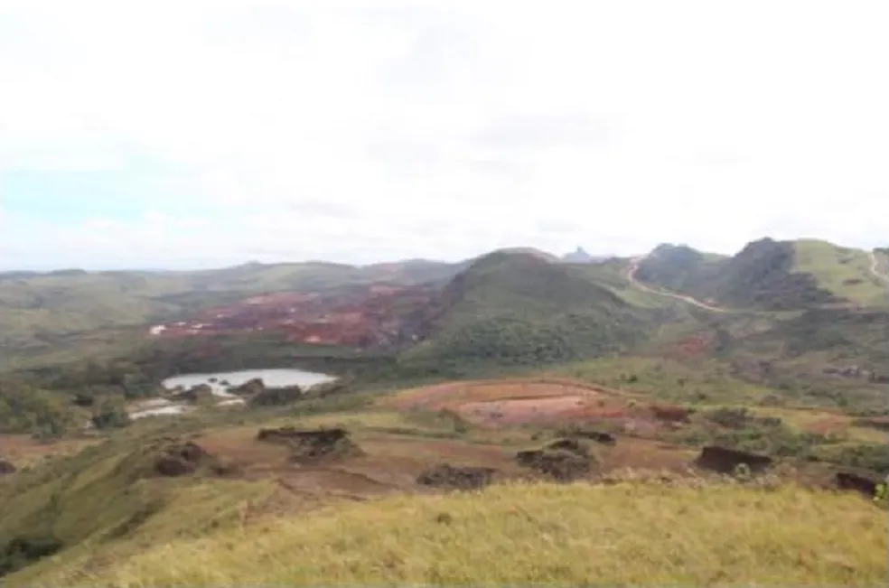

MINAS NOTÍCIAS
Ministério Público aciona
mineradora na Justiça por
barragem irregular em Itabirito
Barragem Dique 2 deveria estar descaracterizada devido ao método de construção a montante.
Por Guilherme Pimenta, g1 Minas — Belo Horizonte
10/02/2023 15h16 Atualizado há 3 horas
